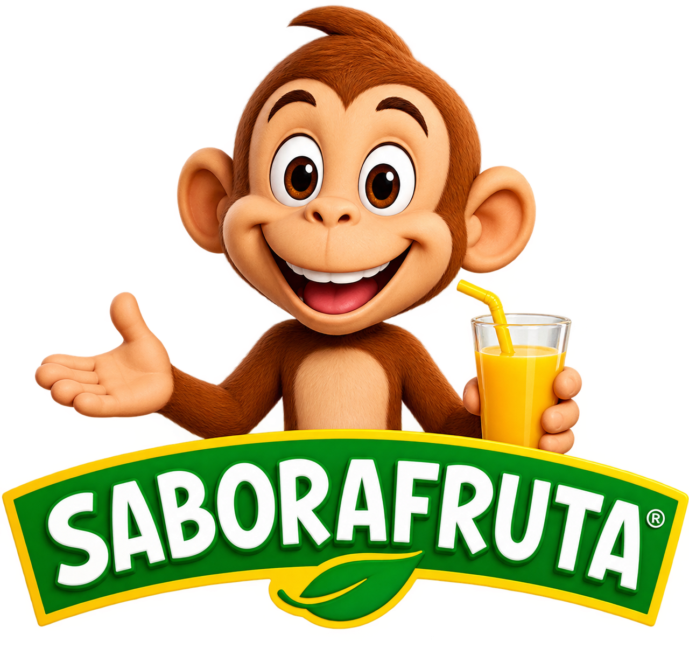
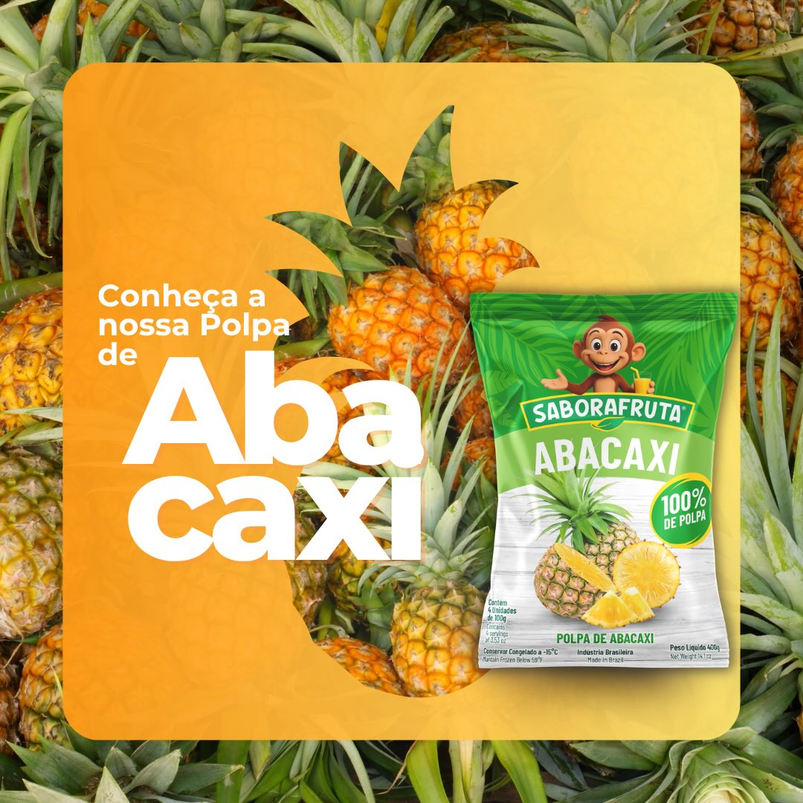
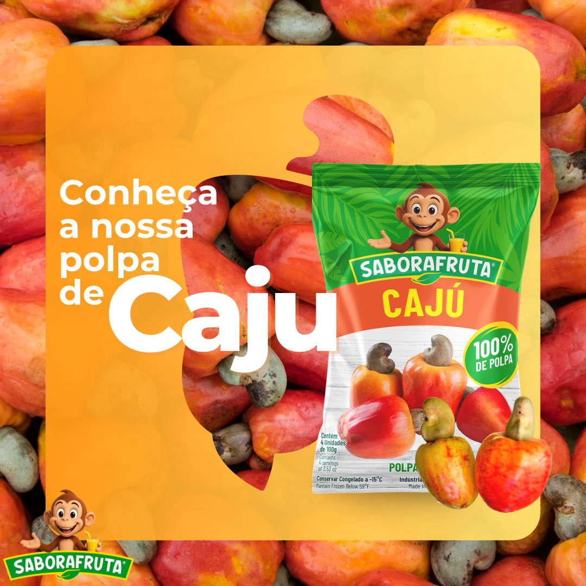
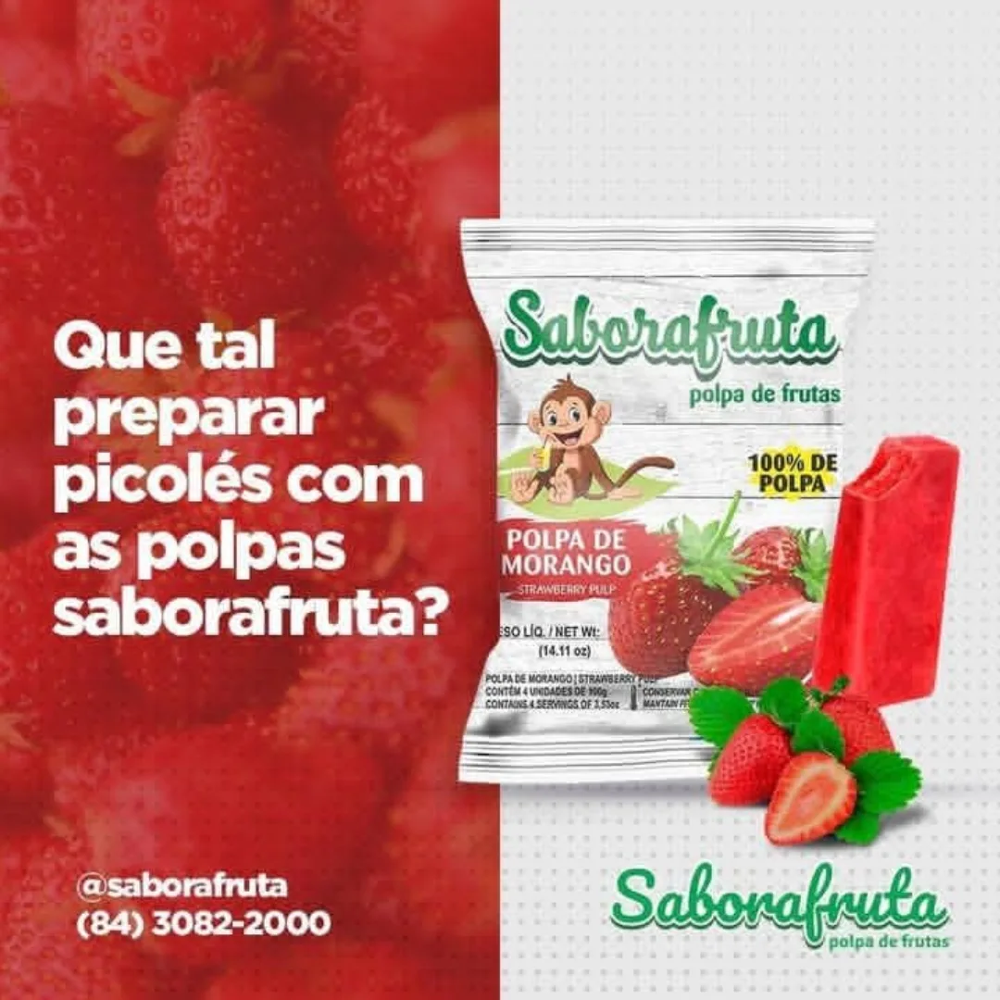

POLPA DE FRUTA✳
Polpas 100% naturais e sem adição de açúcar. Qualidade, sabor e praticidade para deixar o seu dia mais gostoso.

Nossa empresa
Conheça os princípios que guiam a Sabor a Fruta e cada polpa que chega até você.
Distribuir polpas de frutas com qualidade e praticidade, preservando o sabor natural e facilitando a rotina das pessoas.
Crescer junto com nossos clientes e levar cada vez mais longe a qualidade e o sabor das polpas Sabor a Fruta.
É assim que fazemos escolhas e cuidamos de cada etapa, valorizando a fruta e as pessoas que compartilham esse sabor.

✳Polpas de frutas
Da goiaba ao maracujá, tem sabor de fruta
para deixar seus momentos mais gostosos.

NOSSO JEITO DE FAZER
Frutas selecionadas e sabor natural em cada polpa. Da fruta para você.
Conheça nossos produtos
A gente escolhe fazer bem-feito — do respeito pelas frutas até o sabor que chega até você.
Polpas naturais, com o sabor característico de cada fruta.
Uma variedade de sabores para cada gosto e cada momento.
A fruta é a protagonista do sabor das nossas polpas.
Polpas de frutas para a sua rotina em Natal, RN.
Nosso cantinho tropical

FRUTA, COR E ALEGRIA
UM BRINDE AOS BONS MOMENTOS
DA NATUREZA, COM CARINHOA felicidade
tem gosto de fruta.
Tem conversa boa por aqui
Fale com a gente para conhecer nossos sabores e consultar a disponibilidade das polpas.